Чему учится модель: target, loss и градиент Новый аудит сохранённого flow/context v2. Обучение не менялось. Жёсткие исходы, вероятности, локальная hindsight-частота и градиенты показаны раздельно.
Результаты · Независимый аудит Sol 6.1
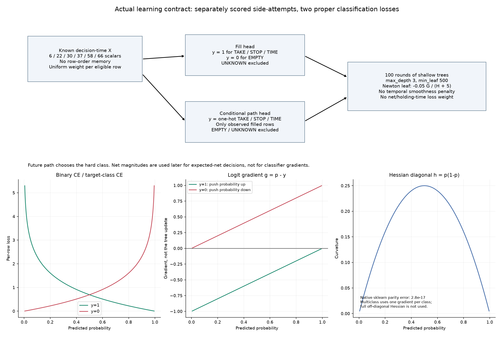
01_learning_scheme.png 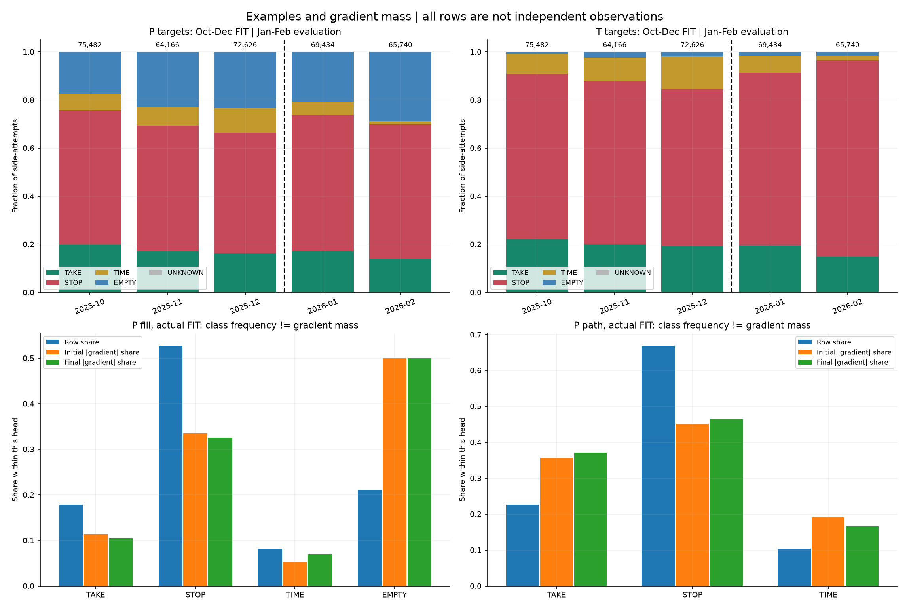
02_examples_and_gradients.png 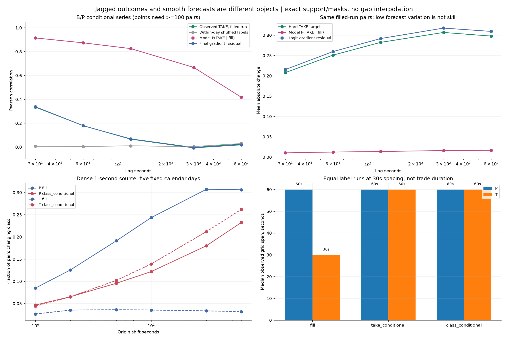
03_temporal_roughness.png 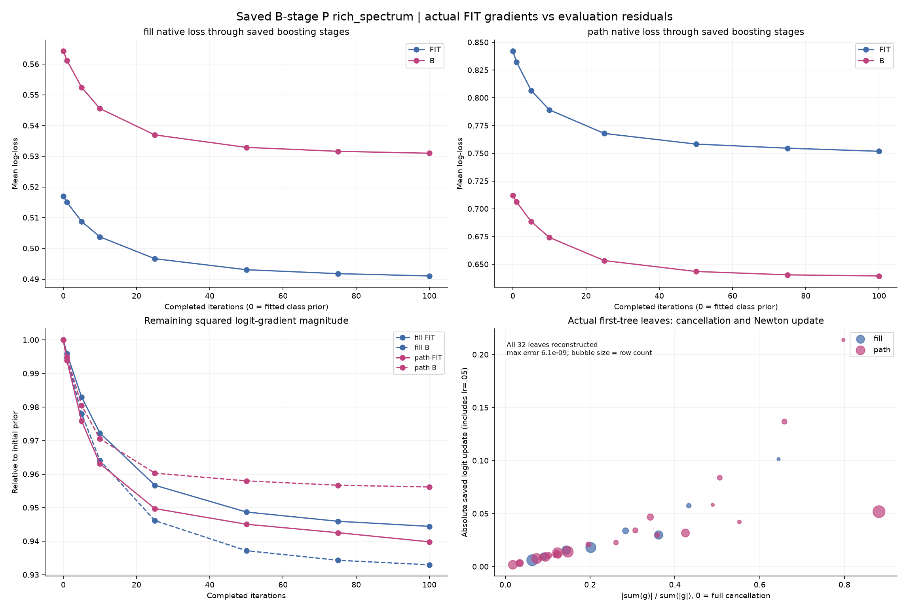
04_training_gradient_and_leaves.png 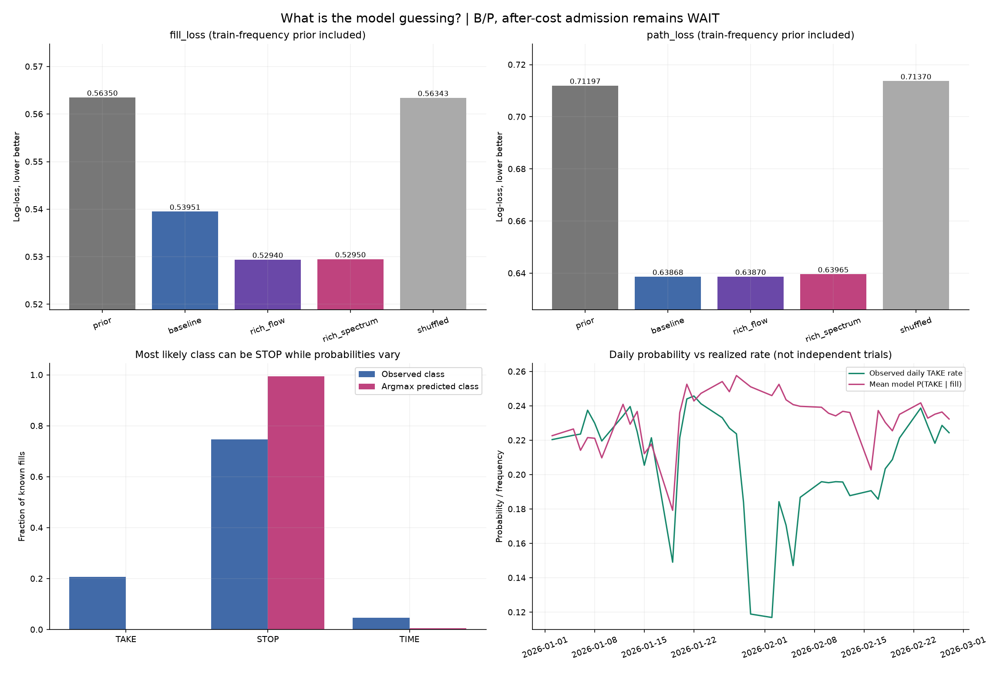
05_prior_and_model_guesses.png 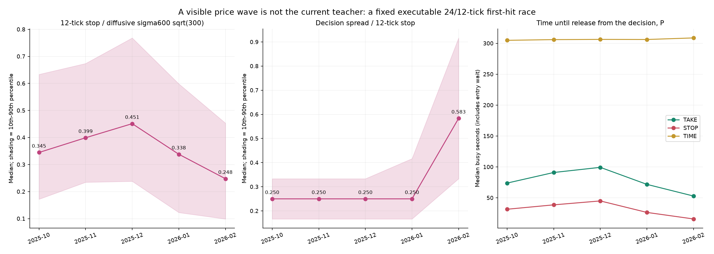
06_barrier_geometry.png 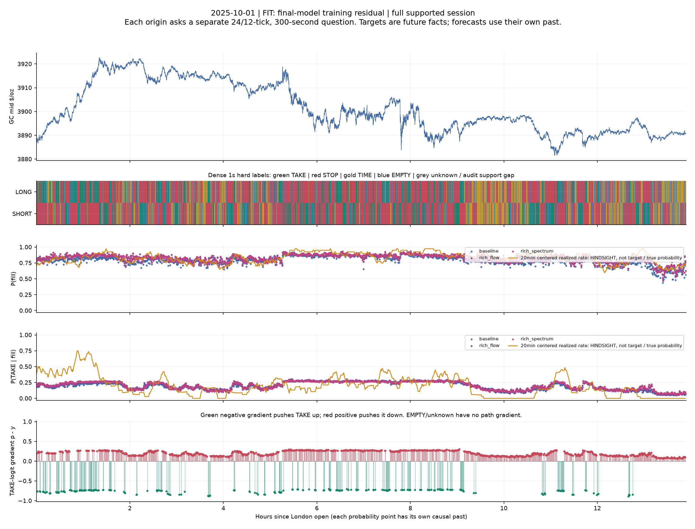
scene_2025-10-01_session.png 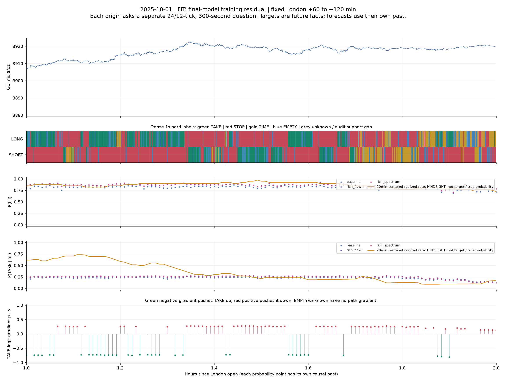
scene_2025-10-01_zoom.png 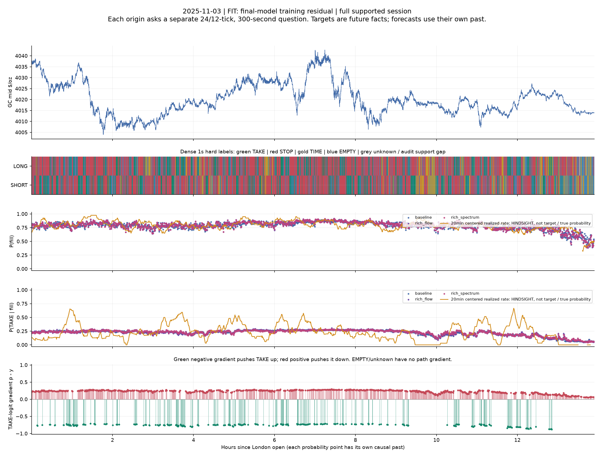
scene_2025-11-03_session.png 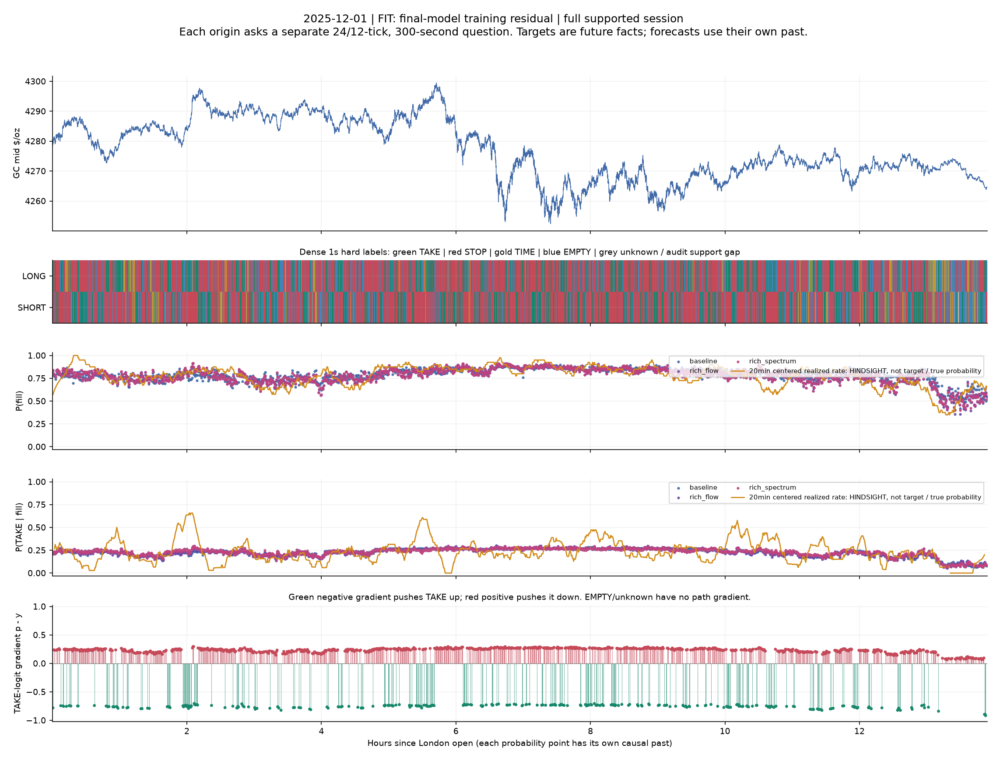
scene_2025-12-01_session.png 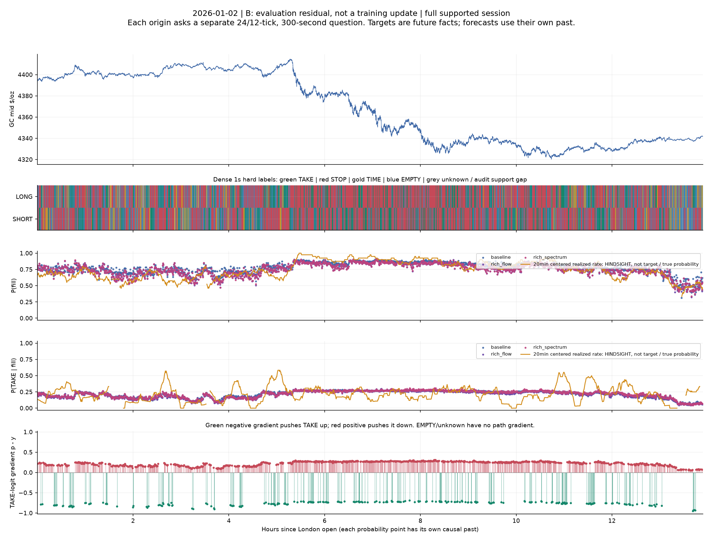
scene_2026-01-02_session.png 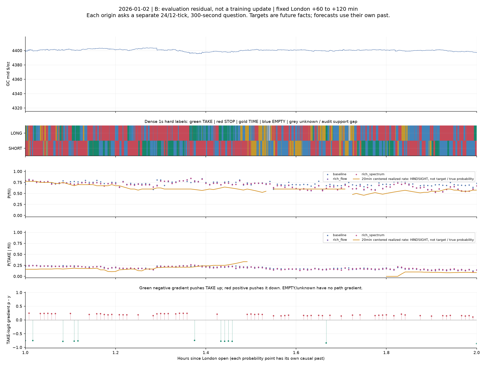
scene_2026-01-02_zoom.png 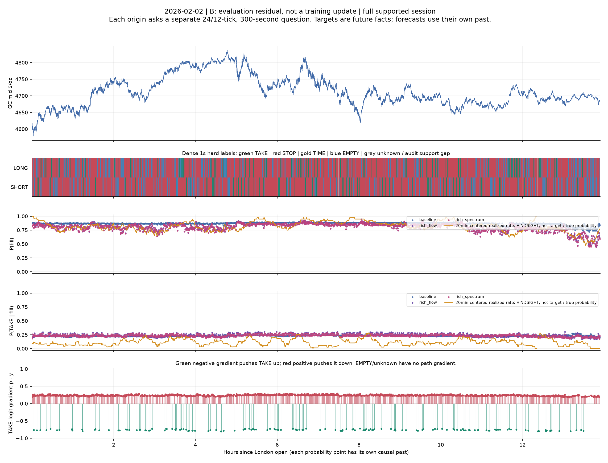
scene_2026-02-02_session.png 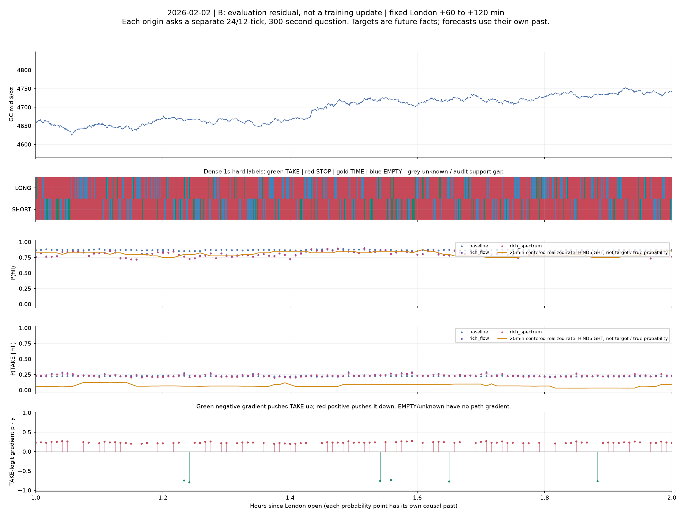
scene_2026-02-02_zoom.png